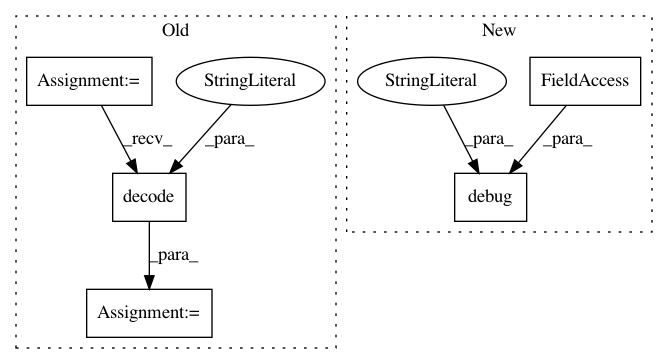

acc6553f80d17469bedfdcdab2ea676478a49d9d,tools/effmpeg.py,Effmpeg,get_fps,#Any#Any#,357
Before Change
if isinstance(input_, str):
_inputs = {input_: _input_opts}
else:
_inputs = {input_.path: _input_opts}
logger.debug(_inputs)
ffp = FFprobe(inputs=_inputs)
_fps = ffp.run(stdout=subprocess.PIPE)[0].decode("utf-8")
_fps = _fps.strip()
if "/" in _fps:
_fps = _fps.split("/")
_fps = str(round(int(_fps[0])/int(_fps[1]), 2))
After Change
@staticmethod
def get_fps(input_=None, print_=False, **kwargs):
Get Frames per Second
logger.debug("input_: %s, print_: %s, kwargs: %s", input_, print_, kwargs)
input_ = input_ if isinstance(input_, str) else input_.path
logger.debug("input: %s", input_)
reader = imageio.get_reader(input_)
_fps = reader.get_meta_data()["fps"]
In pattern: SUPERPATTERN
Frequency: 3
Non-data size: 5
Instances
Project Name: deepfakes/faceswap
Commit Name: acc6553f80d17469bedfdcdab2ea676478a49d9d
Time: 2019-07-04
Author: 36920800+torzdf@users.noreply.github.com
File Name: tools/effmpeg.py
Class Name: Effmpeg
Method Name: get_fps
Project Name: deepfakes/faceswap
Commit Name: e35918cadf0b4bcfbf530e4cb68d52bd2e0bf93f
Time: 2019-10-10
Author: 36920800+torzdf@users.noreply.github.com
File Name: lib/gui/stats.py
Class Name: Session
Method Name: load_state_file
Project Name: deepfakes/faceswap
Commit Name: acc6553f80d17469bedfdcdab2ea676478a49d9d
Time: 2019-07-04
Author: 36920800+torzdf@users.noreply.github.com
File Name: tools/effmpeg.py
Class Name: Effmpeg
Method Name: get_info